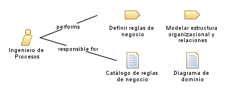

| Role: Ingeniero de Procesos |
 |
|
Relationships
 |
||
| Primary Performs | ||
|---|---|---|
| Modifies |
|
|
Main Description
| Especialista en definir, modelar y optimizar los procesos operativos de la organización mediante el uso de herramientas de modelado. |
Staffing
| Skills | Optimización de procesos, Modelado y simulación, Conocimiento de normas. |
|---|